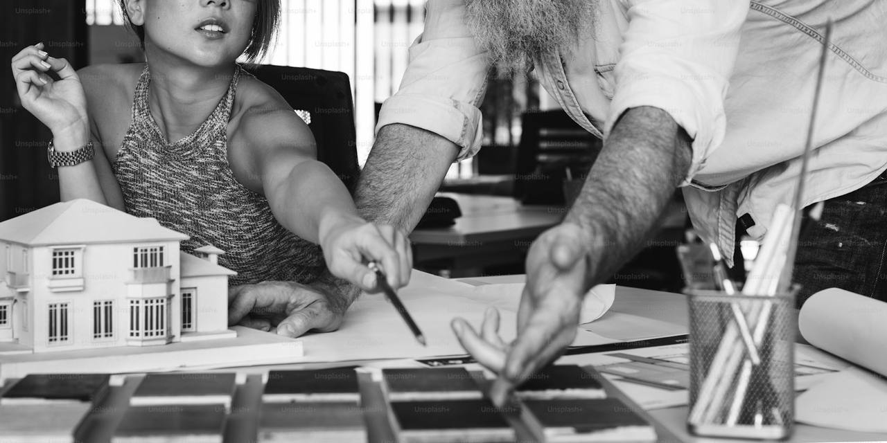
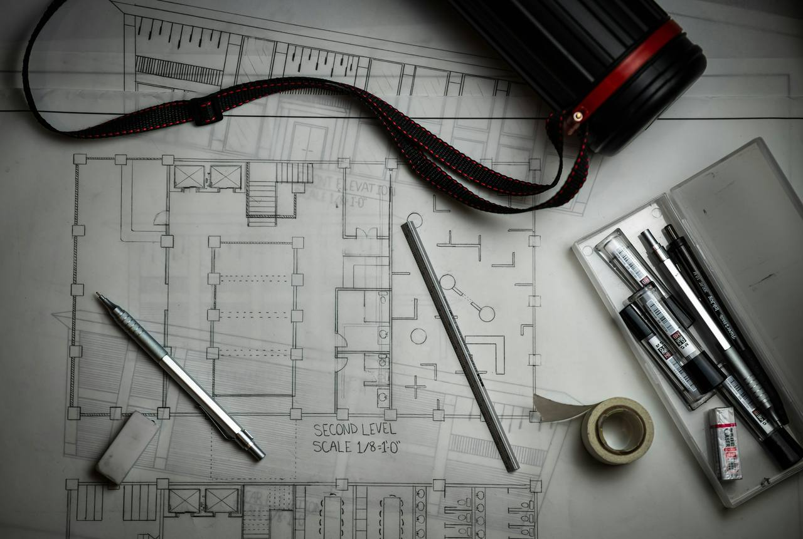

The studio
Studio
A small practice with a long attention span: nine people, one floor, and the patience to walk every site twice.

We are architects who make things, in a room that makes us look up.
BLACKRIDGE was founded in 2014 around a single table in a brick warehouse in Eden Terrace. The table is longer now, the warehouse is our own conversion, and the work has grown from baches and garden rooms to houses, guesthouses and small commercial buildings across the country.
We stay deliberately small. Two or three projects run through the studio at once, and a director draws on every one of them. Models come before renders; site visits come before both. The room's north light, its fern courtyard and the sound of the floor above are all part of how the work gets made.

What we do
Three kinds of building, one way of working.
Houses for clients who intend to live in a place for decades. Boutique accommodation for hosts who want their guests to understand where they are. Small commercial (workplaces, tasting rooms, a boatshed library) for organisations that would rather belong than impress.
Interiors are designed with the building, not after it: joinery, screens, stone and textiles resolved in the same drawings. We carry projects from first walk to final snag, and stay in touch with the buildings afterwards. Most come back to us, happily, for small work.
The people
Directors & associatesDirector · NZRAB registered
Director · Interiors
Associate · Delivery
Plus six architects, graduates, and a workshop dog who attends all crits
Founded
Two directors, one table, a brick room with good light. First commissions: a Waiheke bach, a garden room in Grey Lynn, and a great many site walks.
The warehouse
The Courtyard Office building is bought, partly as office and partly as a long argument about how a 1920s warehouse wants to be worked in. Its conversion begins the following year.
Courtyard Office
The conversion completes and the studio moves upstairs. Folded Earth begins on site in Central Otago, where the earthworks are the first drawings.
Folded Earth
The guesthouse welcomes its first guests. The studio grows to nine, adds an interiors bench, and takes on its first coastal house at Omaha.
Cliff House
Cliff House completes. The practice gathers its work in a small book, not for sale, just for clients, titled plainly: Buildings that belong.